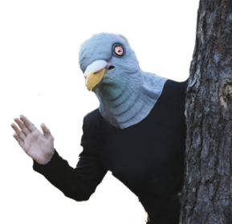
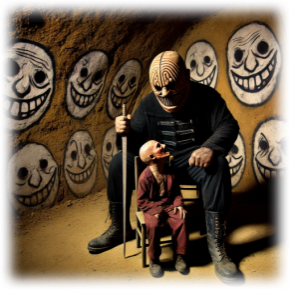
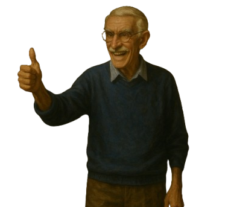
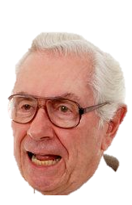
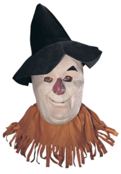
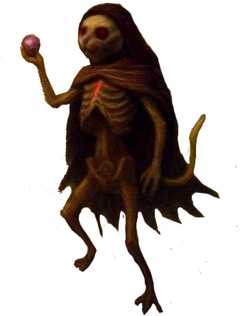

Grandarbre
Grandarbre est une petite ville pittoresque nichée au cœur des Plaines de la Joie. C'est un lieu tranquille, entouré de verdure et de champs florissants, mais l'atmosphère y est toujours étrange.Grandarbre tire son nom du grand chêne millénaire qui se trouve un peut au nord-est de la ville, servant de point de repère et de lieu de rassemblement pour les habitants. Les habitants de Grandarbre considèrent leur arbre comme un lieu sacré, dédié aux esprits de la forêt — en particulier à Ébabouine, l'esprit tutélaire de la Forêt des Plaines de la Joie.
Chaque année, les habitants de Grandarbre célèbrent le fameux Carnaval de Grandarbre. Cette fête, qui s'étend sur plusieurs jours, est toujours marquée par des événements étranges, presque irréels. À la tombée de la nuit, la majorité des villageois sortent masqués, lourdement armés et porteurs de lanternes. Ils errent dans les rues en ricanant, parfois même en dansant, comme pris d’une fièvre mystérieuse. Le matin venu, leur comportement reste tout aussi déroutant : ils parcourent la ville d’un pas incertain, les yeux hagards, agissant comme si la folie avait envahi leur esprit.
 Il n’est pas rare que des drames surgissent durant cette période, lorsque l’île glisse lentement du plan matériel vers les ombres froides du Shadowfell. Les esprits se troublent, les pensées se brouillent, et les cœurs les plus solides peuvent vaciller. On se souvient notamment de Sylvain, le cartographe, homme autrefois jovial et minutieux, connu pour ses cartes détaillées et ses récits de voyage.
Un soir de carnaval, alors que le brouillard s’épaississait au point de masquer les étoiles, Sylvain décida, pour des raisons que nul n’a jamais comprises, de coller un masque de pigeon directement sur sa peau. Certains disent qu’il s’agissait d’un pari insensé, d’autres murmurent qu’une voix douce et insistante lui avait soufflé l’idée au creux de l’oreille. Depuis cette nuit, il erre sans but dans la forêt, devenu fou, le visage figé sous ce masque grotesque.
Un soir de carnaval, alors que le brouillard s’épaississait au point de masquer les étoiles, Sylvain décida, pour des raisons que nul n’a jamais comprises, de coller un masque de pigeon directement sur sa peau. Certains disent qu’il s’agissait d’un pari insensé, d’autres murmurent qu’une voix douce et insistante lui avait soufflé l’idée au creux de l’oreille. Depuis cette nuit, il erre sans but dans la forêt, devenu fou, le visage figé sous ce masque grotesque.
 Et puis, il y a l’histoire de Grossemoune, un villageois à la carrure imposante et au regard fuyant, dont on se souvenait à peine avant la tragédie. Un soir, sans raison apparente, il prit une vieille épée émoussée et se mit à massacrer des enfants dans les ruelles de Grandarbre.
Après son crime, Grossemoune disparut, avalé par le brouillard. Pendant des années, son nom ne fut prononcé qu’à voix basse, comme une malédiction. On pensait qu’il était mort… jusqu’au jour où un groupe d’aventuriers découvrit une caverne ou Grossemoune assemblait des meubles avec des cadavre d'enfant, malheureusement certain étais encore vivant.
Après son crime, Grossemoune disparut, avalé par le brouillard. Pendant des années, son nom ne fut prononcé qu’à voix basse, comme une malédiction. On pensait qu’il était mort… jusqu’au jour où un groupe d’aventuriers découvrit une caverne ou Grossemoune assemblait des meubles avec des cadavre d'enfant, malheureusement certain étais encore vivant.
L’Auberge de Grandarbre
Propriétaire Robert GysteDescription : L’auberge du village est un bâtiment accueillant, mais qui dégage une légère sensation d’oppression. Située à l’ouest de Grandarbre, elle est construite en bois sombre, recouverte de vignes grimpantes et de mousse, ce qui lui donne une aura à la fois ancienne et mystérieuse.
À l’intérieur, une vaste salle commune accueille les voyageurs. De longues tables en bois usé et des bancs confortables y sont disposés çà et là. Des chandeliers suspendus projettent une lumière vacillante, créant une ambiance chaleureuse malgré les ombres dansantes. Un grand foyer en pierre trône au fond de la pièce ; un feu y crépite paisiblement, répandant sa chaleur rassurante.
L’auberge est un lieu de passage essentiel : un carrefour où se croisent histoires et rumeurs. C’est ici que les voyageurs partagent leurs récits et que de nombreuses quêtes trouvent leur point de départ. Les PJ pourront y rencontrer des personnages clés, glaner des informations sur l’île, ou recevoir de mystérieuses missions.
L’auberge est tenue par Robert Gyste, un homme jovial au sourire facile… mais à l’histoire nébuleuse. Originaire de Cozima, Robert fut autrefois un aventurier célèbre, connu pour ses exploits à travers les plans. Un jour, sans prévenir, il a tout quitté — y compris sa propre famille, laissant derrière son unique fils, le flumph Alfredo Gyste — pour venir s’installer sur l’île de Grossevache. Les raisons de cet exil restent floues, et ceux qui les connaissent préfèrent souvent garder le silence…
La Boutique du forgeron
Propriétaire : JosephDescription : Située près de l'entrée du village, la forge est une petite bâtisse en pierre avec un toit de chaume. À l'intérieur, le bruit des marteaux frappant le métal résonne constamment. Joseph, le forgeron, est un homme robuste aux mains calleuses, toujours couvert de suie. La forge est encombrée de diverses armes, armures et outils en cours de fabrication ou de réparation. Des étagères remplies de lingots de métal et d'outils spécialisés bordent les murs, et une grande enclume occupe le centre de la pièce. Joseph est également l’un des épiciers de Marc. Il part souvent en mission de reconnaissance à travers l’île, agissant sous les ordres directs de Marc. La plupart des villageois le craignent et le tiennent à distance, car il porte la réputation d’être le tueur personnel de Marc l’épicier.
Intérêt : La boutique d'Joseph est essentielle pour les PJ cherchant à réparer leur équipement. Joseph est également une source d'informations sur les dangers de l'île, ayant souvent des histoires à raconter sur les créatures des marécages et les secrets des ruines immergées. Il propose aussi des quêtes en échange de matériaux rares.
| Prix | Armes | Max |
|---|---|---|
| 2 Po | Bâton | 3 |
| 2 Po | Dague | 2 |
| 1 Po | Gourdin | 3 |
| 5 Po | Hachette | 3 |
| 5 Po | Javeline | 2 |
| 10 Po | Lance | 1 |
| 25 Po | Arc court | 1 |
| Prix | Armures | Max |
|---|---|---|
| 5 po | Matelassée | 1 |
| 45 po | Cuir clouté | 1 |
| 10 po | Peaux | 1 |
| 400 po | Cuirasse | 1 |
L’Épicerie de Marc
 Propriétaire : Marc
Description : L’épicerie est un petit commerce bien tenu, aux étagères soigneusement remplies de provisions diverses : fruits frais, sacs de grains, herbes médicinales, et potions. Une odeur d’herbes fraîches flotte constamment dans l’air, et une clochette discrète retentit à chaque fois qu’un visiteur pousse la porte. Malgré son apparence accueillante, le lieu est teinté d’une certaine froideur… à l’image de son propriétaire.
Marc est un homme taciturne, peu bavard et rarement aimable. Il ne montre d’intérêt que pour une poignée d’individus : les Épicés, sa troupe personnelle de justiciers. Pour le reste des clients, il se contente d’encaisser sans sourire, et d’observer en silence. Une aura d’autorité glaciale l’entoure.
Derrière le comptoir, une trappe discrète mène à un sous-sol gardé secret. C’est là que se trouve le repaire des Épicés — une bande de justiciers impitoyables recrutés par Marc lui-même, il dit les avoir dénichés dans la forêts, même si selon la rumeurs ils s'agirais de ces enfant extraimement prématurer.
Ces hommes, ces barbares sauvages, sont dépourvus de volonté propre. Ils vivent pour obéir. Dès que Marc leur donne un nom ou une mission, ils exécutent ses ordres avec une brutalité aveugle, sans se poser de questions, ni faire de distinctions morales.
Ils font régner la loi à Grandarbre, et si leur méthode est cruelle, leur efficacité et leur loyauté sont sans faille. Grâce à eux, Marc règne sur le village d’une main de fer.
Description : L’épicerie est un petit commerce bien tenu, aux étagères soigneusement remplies de provisions diverses : fruits frais, sacs de grains, herbes médicinales, et potions. Une odeur d’herbes fraîches flotte constamment dans l’air, et une clochette discrète retentit à chaque fois qu’un visiteur pousse la porte. Malgré son apparence accueillante, le lieu est teinté d’une certaine froideur… à l’image de son propriétaire.
Marc est un homme taciturne, peu bavard et rarement aimable. Il ne montre d’intérêt que pour une poignée d’individus : les Épicés, sa troupe personnelle de justiciers. Pour le reste des clients, il se contente d’encaisser sans sourire, et d’observer en silence. Une aura d’autorité glaciale l’entoure.
Derrière le comptoir, une trappe discrète mène à un sous-sol gardé secret. C’est là que se trouve le repaire des Épicés — une bande de justiciers impitoyables recrutés par Marc lui-même, il dit les avoir dénichés dans la forêts, même si selon la rumeurs ils s'agirais de ces enfant extraimement prématurer.
Ces hommes, ces barbares sauvages, sont dépourvus de volonté propre. Ils vivent pour obéir. Dès que Marc leur donne un nom ou une mission, ils exécutent ses ordres avec une brutalité aveugle, sans se poser de questions, ni faire de distinctions morales.
Ils font régner la loi à Grandarbre, et si leur méthode est cruelle, leur efficacité et leur loyauté sont sans faille. Grâce à eux, Marc règne sur le village d’une main de fer.
Le marché aux puces
Description : Le marché aux puces est un lieu animé, situé sur une grande place pavée. Des étals colorés sont disposés en rangées, où des marchands vendent une variété d'objets, allant des bibelots et antiquités aux objets magiques mineurs. L'air est rempli de l'odeur des épices et du bruit des marchands criant leurs offres. Les PJ peuvent y trouver des objets rares, des artefacts magiques, et des informations précieuses.Intérêt : Le marché est un lieu idéal pour trouver des objets uniques et rencontrer des personnages intéressants. Les marchands peuvent offrir des quêtes en échange de certains artefacts ou d'informations sur des lieux mystérieux de l'île. C'est aussi un endroit où les PJ peuvent vendre des objets trouvés lors de leurs aventures.
| Prix | Vendre/Acheter OM | Chance de trouver |
|---|---|---|
| 100 Po | Commun | 50% |
| 500 Po | Peut Commun | 25% |
| 5 000 Po | Rare | 10% |
| 50 000 po | Très Rare | 5% |
Le Temple de la Lumière
 Description : Niché au cœur du village, le Temple de la Lumière est un petit édifice en pierre blanche, immaculée et paisible. De hauts vitraux aux couleurs douces laissent filtrer une lumière dorée, dessinant sur le sol des scènes de paix, de guérison, et de rédemption.
À l’intérieur règne un silence apaisant, seulement troublé par le craquement du bois sous les pas lents. Des bancs alignés invitent au recueillement, tandis qu’au fond de la nef, une grande statue de Chenillama et Mumu Tapou veille sur l’autel.
Le temple est dirigé par le prêtre Alden, un homme discret au regard bienveillant. Mais à ses côtés se tient un personnage plus intriguant : le père Magosse, vieil homme à la voix douce, officiellement assistant du prêtre… mais connu de certains comme un des Épicés de Marc. Son rôle dans le temple semble plus lié à la surveillance qu'à la dévotion. Toujours présent, toujours souriant, il observe, écoute, et rapporte.
À l’intérieur règne un silence apaisant, seulement troublé par le craquement du bois sous les pas lents. Des bancs alignés invitent au recueillement, tandis qu’au fond de la nef, une grande statue de Chenillama et Mumu Tapou veille sur l’autel.
Le temple est dirigé par le prêtre Alden, un homme discret au regard bienveillant. Mais à ses côtés se tient un personnage plus intriguant : le père Magosse, vieil homme à la voix douce, officiellement assistant du prêtre… mais connu de certains comme un des Épicés de Marc. Son rôle dans le temple semble plus lié à la surveillance qu'à la dévotion. Toujours présent, toujours souriant, il observe, écoute, et rapporte.
Gaspard le costumier
Si les PJ ont tué Gaspard et le Dretch Gougoune dans la cabane hantée (H1.CH2), Gaspard a été libéré de la malédiction qui pesait sur lui mais n’as pas repris sa véritable forme. Il est revenu à Grandarbre pour reprendre sa vie comme avant. Gaspard n’est pas un tanneur ordinaire, il est spécialisé dans les costumes.Les Costumes de Gaspard :
Création: Pour la somme de 300 pièces d'or, Gaspard peut transformer le cadavre d'une créature de puissance inférieure ou égale à 5 en un costume parfaitement réaliste. Ce costume permet à son porteur de se transformer en une copie exacte de la créature dont il est fait.Qualité du Costume : Sur un jet de Perception DD 5, un observateur attentif peut percevoir qu'il s'agit d'un costume et non de la créature réelle. Pour chaque tranche de 100 pièces d'or supplémentaires donné a Gaspard lors de la création du costume, le DD pour discerner le costume augmente de 1, jusqu'à un maximum de 15.
Risque et Récompense : Si un costume est volé et enfilé, il explose avec une détonation violente, infligeant 1d12 dégâts de feu à celui qui le porte et dans un rayon de 5 pieds autour.
Michael l'épouventail
 Michael l’épouvantail se tien immobile devant l’Épicerie de Marc. Son apparence effrayante attire l'attention des passants, qui le regardent avec méfiance ou évitent carrément l'endroit.
Si les PJ s'approchent de Michael, il se redresse lentement, ses yeux scintillants brillant d'une lueur encore plus intense. Il fait un salut cérémonieux avec une élégance inattendue pour une créature de paille et de bois. Sa voix résonne avec un écho lugubre alors qu'il s'adresse aux PJ.
Si les PJ s'approchent de Michael, il se redresse lentement, ses yeux scintillants brillant d'une lueur encore plus intense. Il fait un salut cérémonieux avec une élégance inattendue pour une créature de paille et de bois. Sa voix résonne avec un écho lugubre alors qu'il s'adresse aux PJ.
| Prix | Huiles de Michael | Max |
|---|---|---|
| 70 Po | Huile d'affûtage | 1 |
| 500 Po | Huile de Michael I | 1 |
| 1000 Po | Huile de Michael II | 1 |
| 5000 Po | Huile de Michael III | 1 |
Huile de Michael
Potion, variable (Rare, Très rare, Légendaire)Cette huile gélatineuse et claire produit de minuscules éclats d'argent. L'huile peut recouvrir une arme tranchante ou perforante, ou jusqu'à 5 projectiles tranchants ou perforants. Appliquer l'huile prend 1 minute. L'objet enduit est magique et donne un bonus de +1 (I), +2 (II) ou +3 (III) à l'attaque et aux dégâts. Si jamais une arme as déjà un bonus similaire leurs effet ne s’additionne pas, l’effet de l’huile appliquer la dernière et la seule a agir
Galeb le Duhr
Galeb le Duhr possède une force colossale et une aptitude unique à animer les rochers, ce qui fait de lui le meilleur bâtisseur de Grossevache, et surtout le seul de Plaines de la Joie. Grâce à ses capacités exceptionnelles, il peut construire des bâtiments pour les PJ, offrant une expertise inégalée dans ce domaine. Son savoir-faire, allié à sa puissance, permet de créer des structures solides et imposantes, capables de résister aux épreuves du temps et aux dangers de l'île.| Bâtiment | Prix | Temps |
|---|---|---|
| Maison | 1 000 po | 1 semaine |
| Tour | 10 000 po | 6 mois |
| Chateau | 75 000 po | 2 ans |
| Château Volant | 1 250 000 po | 5 ans |
Eugène

Après une nouvelle défaite cuisante face au saint Hobbes Curr et à Kikhoo le Fouineur, Euquidas 7 — septième ombre de Euquidas Prime et gouverneur du Cozima — découvre par hasard un artefact d’une puissance immémoriale : les Pierres du Temps.
Animé par une soif insatiable de savoir, il utilise ces gemmes mystérieuses pour se lancer dans un périple à travers les âges, remontant jusqu’aux premières respirations du monde. Des millénaires défilent tandis qu’il consacre chaque instant à explorer les secrets oubliés, à observer la naissance et la chute de civilisations entières.
Mais, environ cinq millénaires avant son propre départ, son voyage attire l’attention de l’Ordre des Pierres du Temps — une confrérie implacable dont l’unique mission est d’empêcher toute manipulation du temps et de l'histoire. Capturé, Euquidas 7 est condamné à l’exil sur l’île de Grossevache, où il subit une torture constante, lente et méthodique, destinée à briser même les esprits les plus endurcis.
À présent, brisé et en fuite il se fait appeler Eugène. Si les PJ parviennent à le libérer du donjon de l’Ordre et que leurs relations restent amicales, il choisira de s’installer à l’Auberge de Grandarbre. Là, installé près de l’âtre, il proposera ses talents et ses connaissances aux aventuriers.
Animé par une soif insatiable de savoir, il utilise ces gemmes mystérieuses pour se lancer dans un périple à travers les âges, remontant jusqu’aux premières respirations du monde. Des millénaires défilent tandis qu’il consacre chaque instant à explorer les secrets oubliés, à observer la naissance et la chute de civilisations entières.
Mais, environ cinq millénaires avant son propre départ, son voyage attire l’attention de l’Ordre des Pierres du Temps — une confrérie implacable dont l’unique mission est d’empêcher toute manipulation du temps et de l'histoire. Capturé, Euquidas 7 est condamné à l’exil sur l’île de Grossevache, où il subit une torture constante, lente et méthodique, destinée à briser même les esprits les plus endurcis.
À présent, brisé et en fuite il se fait appeler Eugène. Si les PJ parviennent à le libérer du donjon de l’Ordre et que leurs relations restent amicales, il choisira de s’installer à l’Auberge de Grandarbre. Là, installé près de l’âtre, il proposera ses talents et ses connaissances aux aventuriers.
| Sorts | Prix | Max/jours |
|---|---|---|
| Résurrection | 50 000 po | 2 |
| Cercle de Téléportation | 1 000 po | 1 |